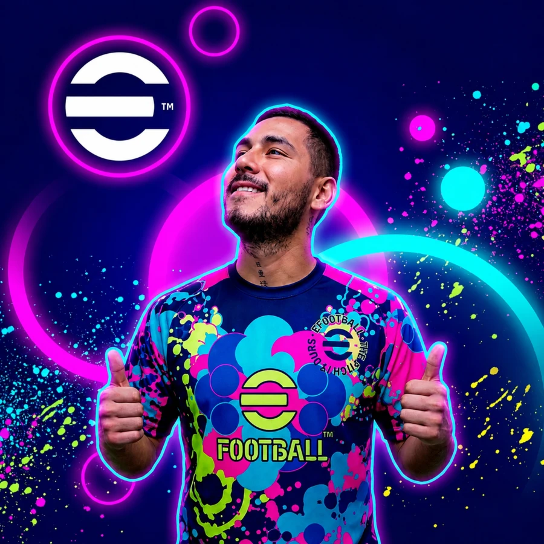
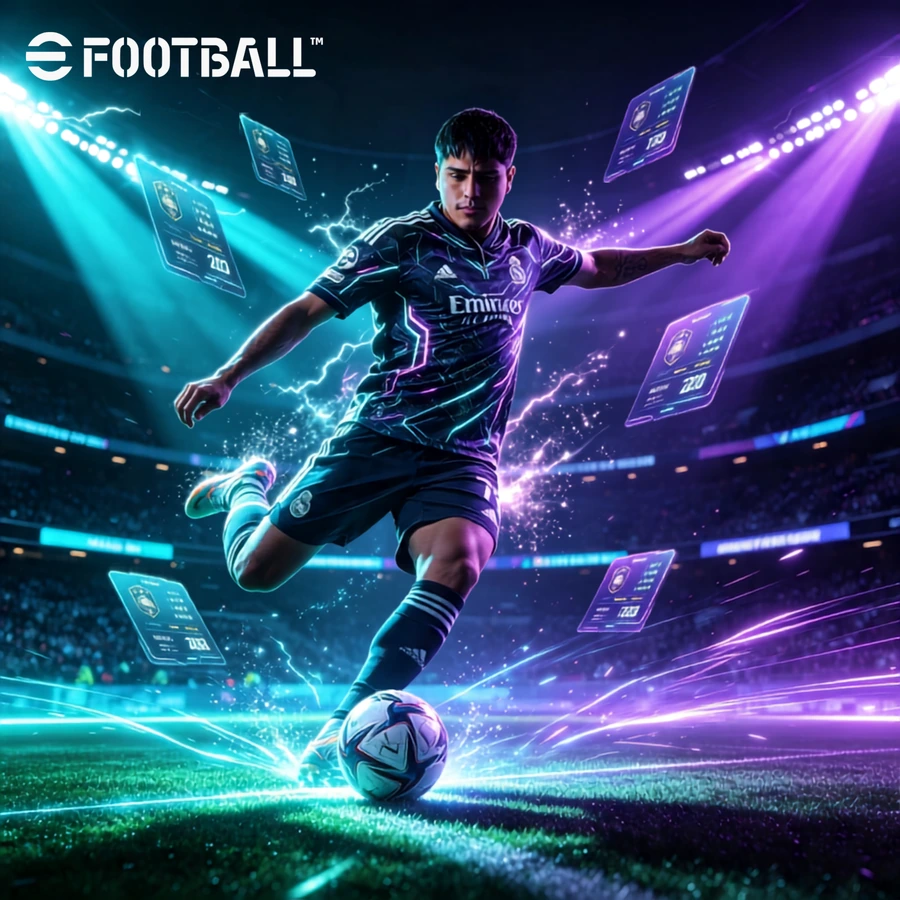
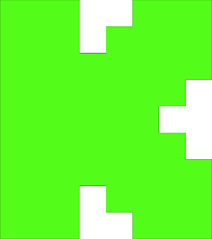

01 · ORGANIZADOR
GianMattus
FC Mobile + eFootball. Gestión de convocatorias, códigos, fixtures, resultados y contenido competitivo.
CONTACTO GMAC
¿Tienes dudas sobre una inscripción, código, horario, resultado o futura convocatoria? Escríbenos por la cuenta que corresponda y llega directamente al organizador del juego.


ORGANIZACIÓN GMAC
GMAC se organiza entre GianMattus y Alexander Calderón. FC Mobile está a cargo de GianMattus; eFootball se coordina entre ambos.
FC Mobile + eFootball. Gestión de convocatorias, códigos, fixtures, resultados y contenido competitivo.
eFootball. Coordinación competitiva, comunidad, contenido y soporte de las ediciones del circuito.
8 REDES · ACCESO DIRECTO
Elige el perfil correcto según el juego o el tipo de consulta. Al pasar el mouse sobre cada tarjeta, la foto cambia al logo de la red social.

KICK · DIRECTOSgianmattusefTransmisiones↗VUELVE A LA COMPETENCIA
Revisa las convocatorias activas de tu juego y entra a la interfaz del campeonato que quieras disputar.